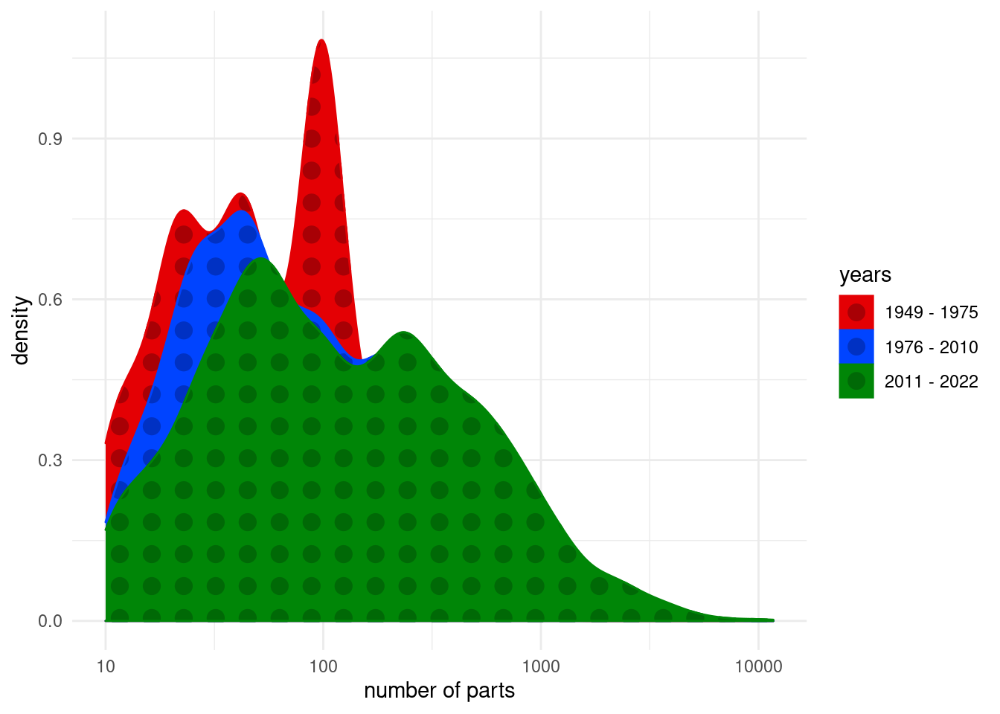
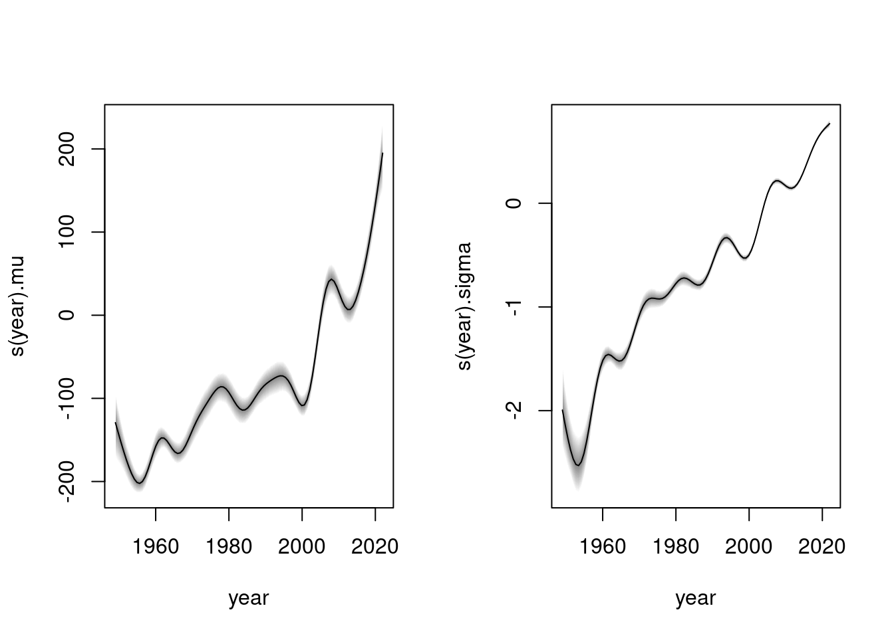

# data <- tidytuesdayR::tt_load("2022-09-06")
inventories <- readr::read_csv('https://raw.githubusercontent.com/rfordatascience/tidytuesday/master/data/2022/2022-09-06/inventories.csv.gz')
inventory_sets <- readr::read_csv('https://raw.githubusercontent.com/rfordatascience/tidytuesday/master/data/2022/2022-09-06/inventory_sets.csv.gz')
sets <- readr::read_csv('https://raw.githubusercontent.com/rfordatascience/tidytuesday/master/data/2022/2022-09-06/sets.csv.gz')
lego <- left_join(inventories, inventory_sets, by = "set_num") |>
left_join(sets, by = "set_num") LEGO sets
Tidy Tuesday
This is my eleventh contribution to TidyTuesday, which is ‘a weekly podcast and community activity brought to you by the R4DS Online Learning Community’. Their goal is to help R learners learn in real-world contexts.
For more information, visit the TidyTuesday homepage, check out their GitHub repository and follow the R4DS Learning Community on Twitter.
The purpose of these posts is mainly for exercising purposes. Thus, the provided graphs are not necessarily designed to provide the greatest possible insights. However, I always provide the R code for interested people at the page bottom.
Loading required package: codaLoading required package: colorspaceLoading required package: mgcvLoading required package: nlmeThis is mgcv 1.8-40. For overview type 'help("mgcv-package")'.
Attaching package: 'bamlss'The following object is masked from 'package:mgcv':
smooth.constructLoading required package: sysfontsLoading required package: showtextdbLEGO sets
This week’s data comes from rebrickable courtesy of Georgios Karamanis. The dataset contains 35,023 observations of LEGO sets over a time horizon from 1949 to 2022. This is a quick look at the variables (from the Tidy Tuesday vignette):
| variable | class | description |
|---|---|---|
| id | integer | variable |
| version | double | variable |
| set_num | character | variable |
| inventory_id | double | variable |
| name | character | variable |
| quantity | double | variable |
| year | double | variable |
| theme_id | double | variable |
| num_parts | double | variable |
| img_url | character | variable |
The descriptions are in this case not very informative.
Goals
The data offers a lot to visualize. One could of course, for example, use the ggpattern package again to include nice LEGO backgrounds. This week, however, I want to provide a quick example of Bayesian distributional regression, where a whole distribution is fit to the data, instead of, e.g. just the mean. For this purpose, I will be using the bamlss package. I want to pay a special focus on how the distribution of the number of parts in LEGO sets has changed over time.
Descriptives: Density plots
To gain a first overview, I plot the corresponding distributions over time. Here, I actually decided to use the ggpattern package to plot the densities in a nice LEGO style. To keep things cleaner, I first cut the complete time horizon into strips:
# data cleaning first, also remove entries w/ less than 10 # of parts to regard actual sets
lego <- subset(lego, !is.na(year) & !is.na(num_parts) & num_parts >= 10)
lego$time_cut <- cut(lego$year, breaks = c(1949, 1975, 2010, 2022), include.lowest = TRUE)
levels(lego$time_cut) <- c("1949 - 1975", "1976 - 2010", "2011 - 2022")
# actual density plot
legend.title = "years"
ggplot(lego) +
geom_density_pattern(aes(x = num_parts, fill = time_cut, color = time_cut,
pattern_fill = time_cut, pattern_color = time_cut),
pattern = "circle",
pattern_angle = 90,
pattern_density = 0.5) +
scale_pattern_fill_manual(values = c("#a80005", "#0031c3", "#006906")) +
scale_pattern_color_manual(values = c("#a80005", "#0031c3", "#006906")) +
scale_fill_manual(values = c("#e40004", "#0044ff", "#008607")) +
scale_color_manual(values = c("#e40004", "#0044ff", "#008607")) +
scale_x_log10() +
labs(
fill = legend.title,
color = legend.title,
pattern_fill = legend.title,
pattern_color = legend.title,
x = "number of parts"
) +
theme(
legend.position = c(0.875, 0.85),
) +
theme_minimal()
From the plot it seems that over the years, the number of parts in LEGO sets has increased both with regard to its expected value and its variance. There is a gradual shift from the left to the right. This could of course be part of some diversification strategy of LEGO (of course, this is just speculation).
Bayesian Distributional Regression
Now, as explained earlier, I employ the bamlss package to model the number of parts’ distribution. Of course, it would be good to first look for an appropriate distribution to fit to the data. I don’t undergo this procedure in this case, however.
AICc 230806.1 logPost -115482. logLik -115388. edf 14.847 eps 0.4881 iteration 1
AICc 228546.2 logPost -114394. logLik -114255. edf 17.144 eps 0.0700 iteration 2
AICc 227862.5 logPost -114072. logLik -113912. edf 18.901 eps 0.0424 iteration 3
AICc 227646.6 logPost -113998. logLik -113800. edf 22.844 eps 0.0189 iteration 4
AICc 227530.8 logPost -113979. logLik -113737. edf 28.213 eps 0.0326 iteration 5
AICc 227501.4 logPost -113987. logLik -113718. edf 32.306 eps 0.0162 iteration 6
AICc 227496.7 logPost -114002. logLik -113715. edf 32.383 eps 0.0025 iteration 7
AICc 227495.6 logPost -113984. logLik -113715. edf 32.390 eps 0.0016 iteration 8
AICc 227495.3 logPost -113967. logLik -113715. edf 32.392 eps 0.0011 iteration 9
AICc 227495.1 logPost -113967. logLik -113715. edf 32.396 eps 0.0008 iteration 10
AICc 227495.0 logPost -113966. logLik -113715. edf 32.400 eps 0.0006 iteration 11
AICc 227494.9 logPost -113966. logLik -113714. edf 32.403 eps 0.0004 iteration 12
AICc 227494.8 logPost -113966. logLik -113714. edf 32.406 eps 0.0003 iteration 13
AICc 227494.8 logPost -113966. logLik -113714. edf 32.408 eps 0.0002 iteration 14
AICc 227494.8 logPost -113966. logLik -113714. edf 32.409 eps 0.0002 iteration 15
AICc 227494.8 logPost -113966. logLik -113714. edf 32.410 eps 0.0001 iteration 16
AICc 227494.7 logPost -113966. logLik -113714. edf 32.411 eps 0.0001 iteration 17
AICc 227494.7 logPost -113966. logLik -113714. edf 32.412 eps 0.0001 iteration 18
AICc 227494.7 logPost -113966. logLik -113714. edf 32.412 eps 0.0001 iteration 18
elapsed time: 5.29sec
Starting the sampler...
| | 0% 32.25sec
|* | 5% 33.08sec 1.74sec
|** | 10% 29.75sec 3.31sec
|*** | 15% 27.68sec 4.88sec
|**** | 20% 27.38sec 6.84sec
|***** | 25% 26.43sec 8.81sec
|****** | 30% 25.39sec 10.88sec
|******* | 35% 23.87sec 12.85sec
|******** | 40% 22.33sec 14.89sec
|********* | 45% 20.78sec 17.00sec
|********** | 50% 18.96sec 18.96sec
|*********** | 55% 17.23sec 21.06sec
|************ | 60% 15.34sec 23.01sec
|************* | 65% 13.52sec 25.10sec
|************** | 70% 11.59sec 27.04sec
|*************** | 75% 9.71sec 29.13sec
|**************** | 80% 7.78sec 31.10sec
|***************** | 85% 5.85sec 33.18sec
|****************** | 90% 3.91sec 35.15sec
|******************* | 95% 1.96sec 37.22sec
|********************| 100% 0.00sec 39.16secA first glance at the model:
par(mfrow = c(1, 2))
plot(m)
It is interesting to see that both the mean and variance (or standard deviation) of the number of parts increases gradually with time. The strategy to release sets with more parts and increasing the variance at the same time thus does not seem to be a sudden decision, but instead a strategy that has been adjusted gradually. This is of course just a first look at the data and conclusions have to be regarded cautiously.
Final Plot
Now, I finally take the first plot and make a visually (somewhat) nice plot out of it.
Full R code available on Github.
References
colorspace-package:
https://colorspace.r-forge.r-project.org/index.htmlknitr-package:
https://yihui.org/knitr/sf-package:
https://r-spatial.github.io/sf/rnaturalearth-package:
https://docs.ropensci.org/rnaturalearth/ggpattern-package:
https://coolbutuseless.github.io/package/ggpattern/index.htmlshowtext-package:
https://cran.r-project.org/web/packages/showtext/index.htmlggtext--package: https://wilkelab.org/ggtext/